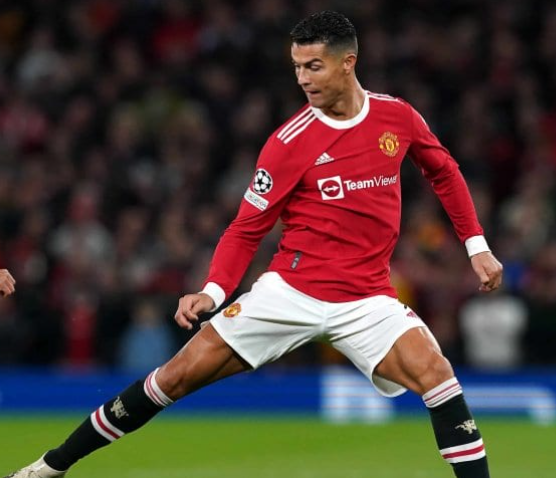

INICIO
DEOPORTES FEDE
DEOPORTES FEDE
En vísperas del 40° aniversario de la obtención del Metropolitano 1981, hito muy recordado por los fanáticos xeneizes y por el público futbolero en general por la coronación con Diego Maradona, Boca prepara una nueva camiseta que recuerda aquella gesta inspirándose en su indumentaria.

La capital francesa es una locura; hombres, mujeres y niños rodeando el Parque de los Príncipes para vivir en carne propia la llegada de Lionel Messi al estadio y su posterior presentación oficial como nuevo jugador del París Saint Germain. Luego de permanecer casi medio día al rayo del sol aguardando por el 10, el furor persistió y se vio reflejado en las inmediaciones de la tienda oficial del club que ya tiene la número 30 de Leo y ¡ya casi no tiene stock!. Los hicnas hacen largas filas para poder comprar la camiseta del astro futbolistico.

Cristiano Ronaldo fue fundamental este miércoles en la victoria de Manchester United como local ante Villarreal de España por la segunda fecha del Grupo F de la UEFA Champions League, donde marcó el 2-1 en el epílogo. Sin embargo, una curiosidad fue noticia también sobre el astro portugués: lució por primera vez una casaca de su equipo pero diseñada especialmente para él. ¡Era el único que usó mangas largas! En realidad, queda la duda de si la marca lanzará próximamente el uniforme de mangas largas y CR7, únicamente, se hizo acreedor de un adelanto del modelo que se viene. Por lo pronto, el resto de sus compañeros debieron paliar el frío adicionando una camiseta que cubriera sus brazos bajo la remera oficial.
